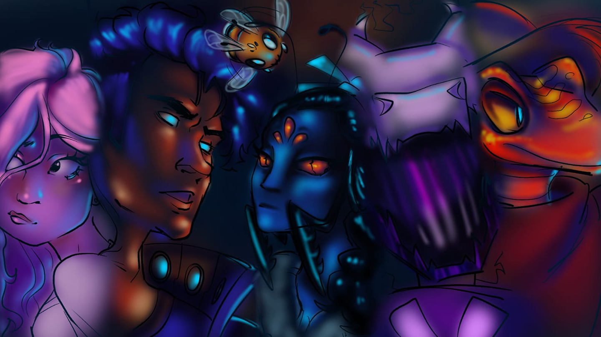
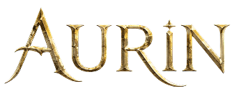
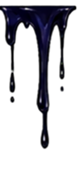

Em Aurin, um mundo onde humanos e animais evoluídos coexistem, a magia nasce da Árvore Primordial, uma fonte de poder tão antiga quanto o próprio mundo. Séculos atrás, para impedir que esse poder caísse em mãos erradas, a árvore foi escondida nas poucas montanhas existentes e protegida por uma rede secreta de Guardiões. Disfarçados como simples fazendeiros, eles vivem espalhados pela região, observando cada movimento e mantendo a localização da árvore longe dos olhos da Ordem, uma organização determinada a controlar toda a magia de Aurin. Por gerações, o segredo permaneceu seguro. Mas quando eventos inesperados começam a ameaçar o equilíbrio do mundo, velhas alianças são colocadas à prova, segredos enterrados vêm à tona e jovens que jamais imaginaram fazer parte dessa guerra descobrem que seus destinos estão ligados ao maior mistério de Aurin. Entre florestas, fazendas isoladas, criaturas extraordinárias e conflitos que podem definir o futuro do mundo, uma batalha silenciosa está prestes a começar.